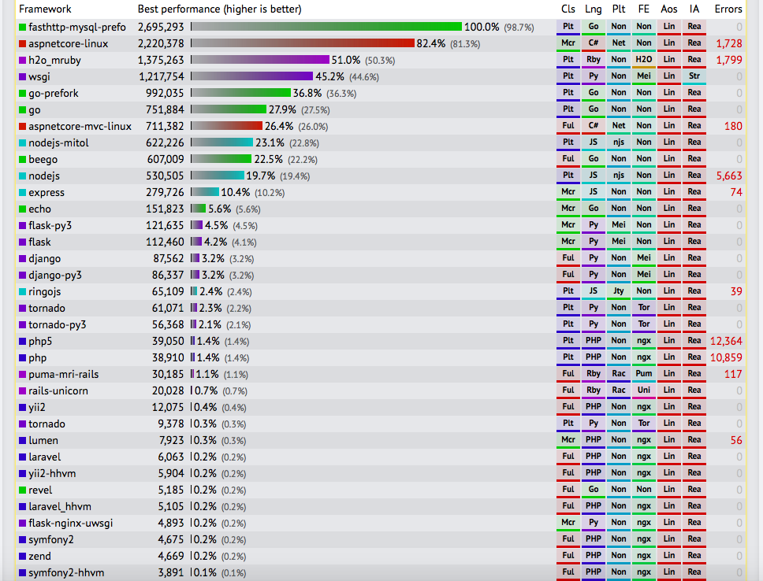
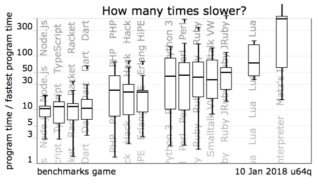
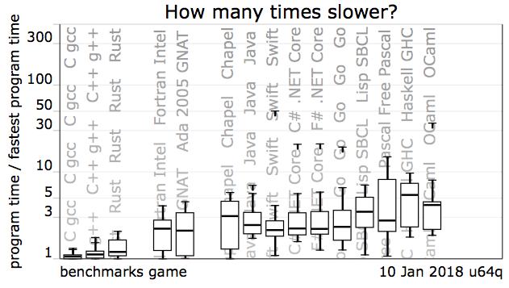

About
Go is an open source programming language that make it easy to build simple, reliable and efficient software.
Only through simplicity of design can a sistem remain stable, secure and coherent as it grows.
Requirements
Why I like go
- made by Rob Pike, Ken Thomson, Robert Griesemer
- it's made for cloud. Try to achieve maximum effect with minimum mean
- clean syntax
- compiled language
- static types
- garbage collection
- package system
- backward compatibility: go programs can be compiled and run with newer versions of compilers and standard libraries.
- concurrent and parallel programming language
- amazing standard libraries
Comparison with other technologies
Go is very good at developing web servers. Has a built in standard library with great performance and security.

The speed execution of instruction is very fast. Go is one of the fastest language with Garbage Collector.
 